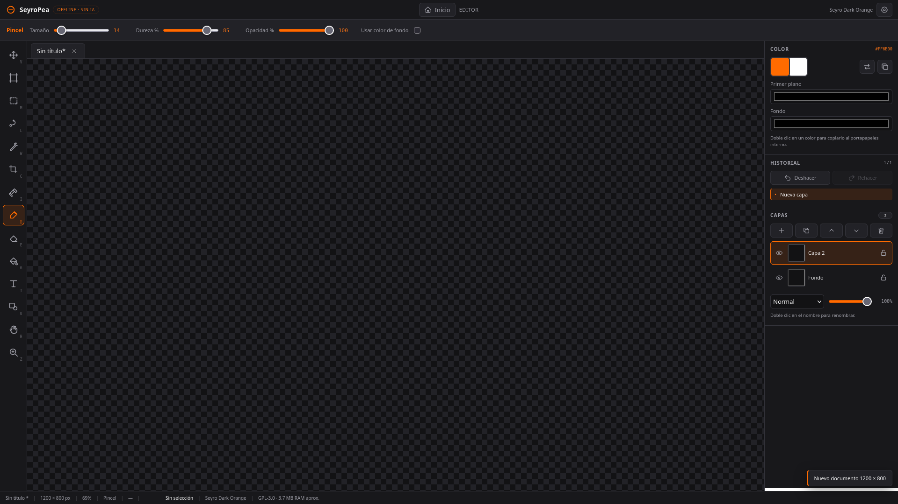
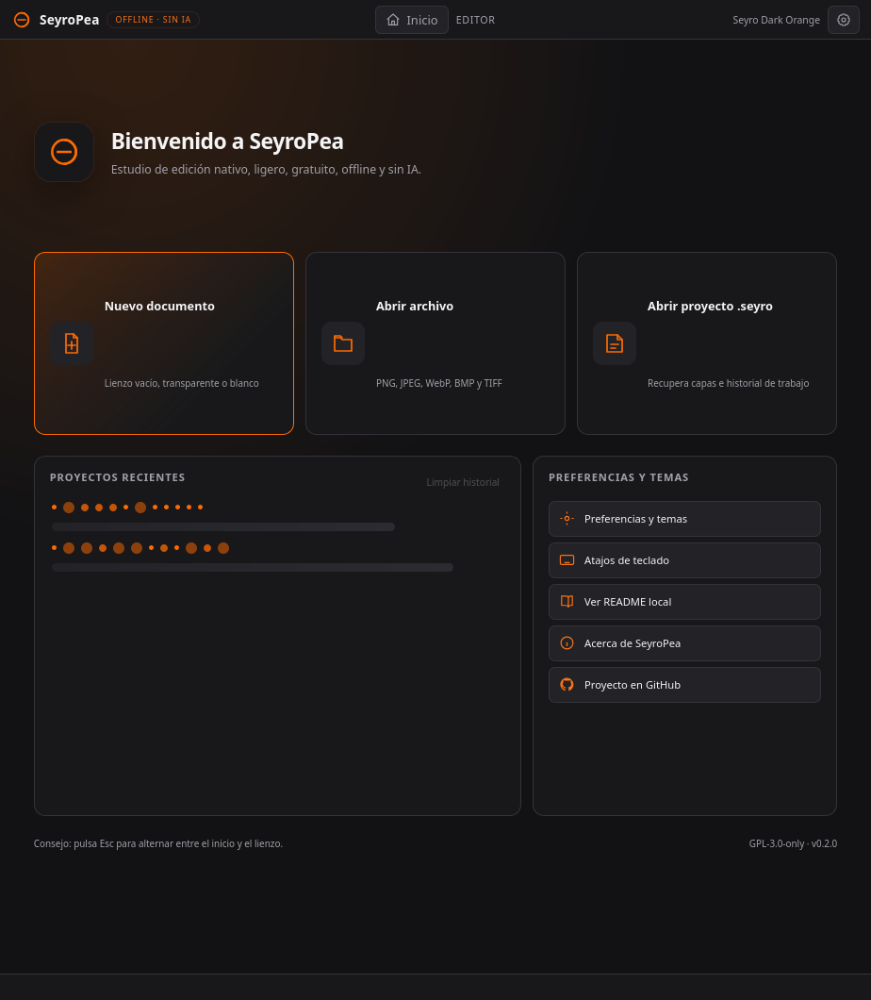

▣
Capas y composición
15 modos de fusión, opacidad, visibilidad, bloqueo, duplicado y reordenación con historial reversible.
SeyroPea es un estudio de edición de imágenes de escritorio: nativo, ligero, gratuito y 100% offline. Construido con Tauri v2 y Canvas2D puro, sin frameworks en runtime ni modelos generativos.
Todo el procesamiento es algorítmico y determinista sobre buffers RGBA. Sin cuentas, sin telemetría, sin CDNs y sin fuentes remotas.
15 modos de fusión, opacidad, visibilidad, bloqueo, duplicado y reordenación con historial reversible.
Mover, transformar, marco, lazo, varita, recorte, cuentagotas, pincel, borrador, cubeta, texto, formas, mano y zoom.
Relleno contiguo con tolerancia, capa activa o capas visibles y Undo/Redo integrados (atajo G).
18 filtros y ajustes tonales con vista previa y comparación antes de aplicar.
.seyroManifiesto JSON y capas RGBA8 comprimidas con DEFLATE, con validación y límites estrictos.
Seyro Dark Orange, Dracula y Tokyo Night, wallpaper → paleta, 10 idiomas persistentes y fuentes del sistema.
Toast, Modal, Tooltip, Badge y un SkeletonLoader theme-aware inspirado en DIVAE.
Rutas e IDs validados, texto escapado, límites de descompresión, CSP estricto y permisos Tauri mínimos.
Interfaz pulida con un solo tablero de pestañas, ajedrezado nítido, paneles sin solapes y pantalla de inicio con recientes locales.


La aplicación se ejecuta con recursos incluidos en el binario. La única salida a red es una comprobación opcional de actualizaciones que falla en silencio.
La frontera entre Rust y JavaScript valida todo dato no confiable antes de usarlo.
Paquetes firmados por el workflow de Release con sumas SHA256SUMS.txt. También puedes compilar desde el código fuente con Cargo y Tauri CLI.